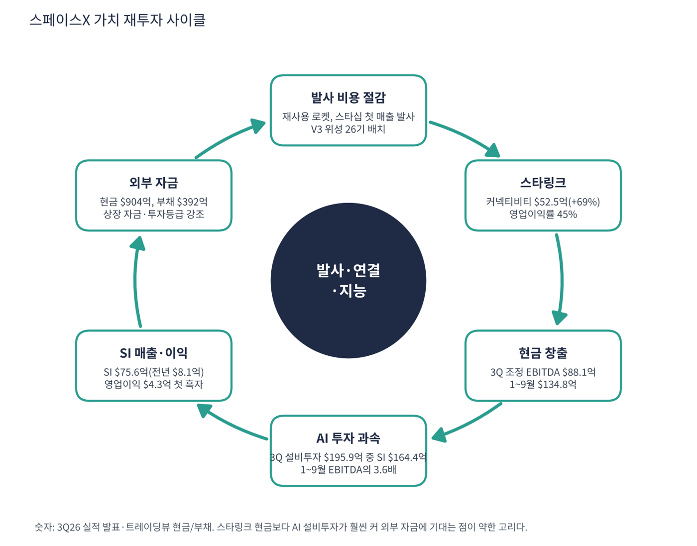

스페이스X는 일론 머스크가 2002년 세운 우주 회사다. 재사용 로켓 팰컨 9으로 세계 발사 시장을 장악했고 위성 인터넷 스타링크로 전 세계에 인터넷을 공급한다. 2026년 공시에는 '초지능(SI)' 부문이 새로 등장했는데 그록(Grok) AI 모델, 클라우드 연산, AI 코딩 도구 커서(Cursor) 인수를 포함한다. 지금은 '로켓 + 위성 인터넷 + AI'의 세 회사가 합쳐진 기업이고, 3분기 매출의 절반 이상이 AI에서 나왔다. 2026년 6월 나스닥에 상장했다.
| 항목 | 내용 |
|---|---|
| 종목 | Space Exploration Technologies Corp. (SPCX) · NASDAQ · 우주·통신·AI · 2002년 설립 · 본사 텍사스주 스타베이스 |
| 시가총액 | 약 $1.82조 · 3분기 연환산 매출 대비 P/S 약 31배 (11/6 종가 $134.27). PER은 이익 이력이 짧아 없음 |
| 최근 분기(3Q26) | 매출 $145.8억(+161%), 영업이익 $27.9억(전년 -$2.7억), 순이익 $44.0억(전년 -$10.5억), 조정 EBITDA $88.1억(+306%) |
| 현금·부채 | 현금 $904억, 총부채 $392억 (트레이딩뷰 최근 분기). 순현금 약 $512억 |
| 상장 | 2026년 6월 나스닥. 상장 첫 주 $150~176, 장중 최고 $226 |
| 다음 실적 | 4Q26 실적: 2027년 2월 말 예상 (공시 일정 미확인) |
| 직책 | 인물 | 역할·특징 |
|---|---|---|
| 창업자 겸 CEO | 일론 머스크 | 발사·위성·AI를 하나의 수직 통합 구조로 묶는 설계자. 테슬라 등 여러 회사를 동시에 경영한다는 점이 경영 집중도 위험으로 지적됨 |
| CFO | 이름 미확인 | 3분기 코멘트에서 "투자등급 재무구조를 유지하면서 자본 효율에 집중한다"고 설명 |
경영 스타일: '현금 엔진(스타링크)으로 가장 큰 도박(AI·스타십)에 건다'. CFO는 "발사 리더십, 반복되는 스타링크 매출, SI 인프라의 대규모 확장이 결합해 의미 있는 운영 레버리지를 만들고 있다. 우리는 미래의 인프라를 규율 있게 짓고 있다"고 했다. 행동은 공격적이다. 1~9월 설비투자가 $481억으로 같은 기간 조정 EBITDA $135억의 3.6배이고, 3분기 설비투자 $196억의 84%($164억)가 AI다. 첫 매출 스타십 발사로 스타링크 V3 위성 26기를 배치했다(팰컨 9 대비 약 10배 용량).
팰컨 9 재사용으로 발사 비용을 낮췄고 스타십으로 한 번 더 낮추려 한다. 스타링크 V3로 위성망 용량을 키우고, AI 연산 용량 1.7GW, 자체 모델(그록), AI 소프트웨어(커서)를 갖췄다.
자체 로켓으로 위성을 싸게 올리고, 위성망으로 데이터를 연결하고, 그 위에서 AI를 돌리는 수직 통합이 목표다. 장기적으로 궤도 데이터센터 구상도 거론된다(트레이딩뷰 뉴스 요약 기준).
| 분기 | 매출 | 우주 | 커넥티비티 | SI | 영업이익 | 조정 EBITDA | 설비투자 | 특이 사항 |
|---|---|---|---|---|---|---|---|---|
| 2025 상반기 (1~2Q) | $81.4억 | $16.1억 | $50.6억 | $14.7억 | -$9.4억 | $29.4억 | $69.7억 | 분기별 분리 미공개 |
| 2025.3Q | $55.8억 | $16.7억 | $31.0억 | $8.1억 | -$2.7억 | $21.7억 | $68.8억 | |
| 2025.4Q | – | – | – | – | – | – | – | 상장 전, 분기 자료 미공개 |
| 2026.1Q | $46.9억 | $6.2억 | $32.6억 | $8.2억 | -$19.4억 | $11.3억 | $101.1억 | |
| 2026.2Q | $78.1억 | $9.6억 | $42.9억 | $25.6억 | -$1.4억 | $35.4억 | $183.7억 | 6월 상장 |
| 2026.3Q | $145.8억 | $17.7억 | $52.5억 | $75.6억 | $27.9억 | $88.1억 | $195.9억 | 첫 전사 흑자 |


흐름 요약: 3분기에 매출이 한 분기 만에 거의 2배($78억 → $146억)가 됐고, 늘어난 $68억 중 $50억이 SI다. 회사는 SI 증가 요인으로 클라우드 서비스 계약(AI 연산 임대), 커서 인수, 그록 봇 같은 자체 AI 소프트웨어를 들었다. 실적 폭발의 주역은 로켓이나 스타링크가 아니라 AI다. 세 사업의 성격이 완전히 다르다. 커넥티비티(스타링크)는 매출 $52.5억에 영업이익률 45%인 안정적 현금 사업이고, 우주는 스타십 개발비로 손익분기를 오가며, SI는 막 흑자로 돌아섰지만 투자 규모가 가장 크다. 순이익($44.0억)이 영업이익($27.9억)보다 큰 것은 영업 외 이익(투자 평가이익 등)이 반영된 결과로 보이며 세부 내역은 10-Q로 확인이 필요하다. 2025년 4분기는 상장 전이라 자료가 없고 2025년 1·2분기는 상반기 합계만 확인했다.
| 사업부 | 돈을 버는 방식 | 3Q26 매출 | 영업이익 |
|---|---|---|---|
| 우주 (Space) | 팰컨 9·스타십 발사(정부·민간 위성), 드래곤 유인·화물 우주선(NASA 등) | $17.7억 | -$0.07억 |
| 커넥티비티 | 스타링크 위성 인터넷 구독(가정·기업·항공·해운·정부), 단말기 판매 | $52.5억 (+69%) | $23.7억 |
| 초지능 (SI) | AI 연산 클라우드 계약, 그록 모델·그록 봇, 커서(AI 코딩 도구) 구독 | $75.6억 (1년 전 $8.1억) | $4.3억 (첫 흑자) |

스타링크가 회사 전체를 떠받친다. 1~9월 커넥티비티 영업이익 $52억은 우주(-$12억)와 SI(-$33억)의 손실을 메우고도 남는다. 3분기에는 SI가 처음 흑자로 돌아서며 세 사업 중 두 개가 이익을 냈다. 스타십이 상용화되면 위성 배치 비용이 크게 내려가 스타링크 이익이 더 커지는 구조다. 다만 3분기 SI 매출 급증에는 클라우드 계약과 커서 인수 효과가 섞여 있어 유기적 성장이 얼마인지는 몇 분기 더 확인해야 한다.
CFO의 3분기 메시지가 방향을 보여준다. "발사 리더십, 반복되는 스타링크 매출, SI 인프라의 대규모 확장이 결합해 의미 있는 운영 레버리지를 만들고 있다." 스페이스X가 가려는 곳은 지구와 우주를 잇는 '물리 인프라 + AI' 복합 기업이다.
| 축 | 내용 |
|---|---|
| 발사 | 재사용 로켓으로 발사 비용을 낮추고 스타십으로 한 번 더 낮춤. 첫 매출 스타십 발사 성공 |
| 연결 | 스타링크 V3 위성으로 용량 대폭 확대. 기업·정부 채택 가속 |
| 지능 | 1.7GW 연산 용량, 자체 모델(그록), AI 소프트웨어(커서). 장기적으로 궤도 데이터센터 구상 |


위: 트레이딩뷰 주봉 데이터로 재구성(10·20·40주선). 아래: 트레이딩뷰 공개 차트 일봉 캡처(작도 숨김, 이동평균선·볼린저밴드만 표시).
| 이동평균 | 값 | 종가 대비 | 해석 |
|---|---|---|---|
| 5일선 | $134.30 | -0.0% | 금요일 +8.6%로 회복 |
| 20일선 | $145.24 | -7.6% | 10월 박스 하단 |
| 50일선 | $149.18 | -10.0% | 9~10월 평균 |
| 100일선 | $143.88 | -6.7% | 상장 후 거의 전 기간 평균 |
| 200일선 | – | 계산 불가 | 상장 103일로 계산 불가 |
2026년 6월 둘째 주 상장가 $150, 셋째 주 장중 $226, 7월 내내 하락해 7월 말 $107(7주 만에 -54%), 8/4 2분기 실적 주 +23%($106 → $133), 9월 $148~155, 10월 첫째 주 $176, 10/20 3분기 실적 주 $147, 11월 첫 주 장중 $120 → $134 마감이다. 이후 $105~176 사이 박스권이다.
| 규칙 | 기준 | 현재 값 | 신호 |
|---|---|---|---|
| 장기 추세 필터 | 종가 vs 200일선 | 데이터 부족 (상장 103일) | – |
| 중장기 교차 | 50일선 vs 200일선 | 데이터 부족 | – |
| 단기 교차 | 20일선 vs 50일선 | $145.24 < $149.18 | 매도 |
| 돈키언 채널 | 55일 고가 $176.42 / 저가 $120.39 | 중간값 $148.41 아래 | 매도 |
| 1개월 모멘텀 | 21거래일 수익률 | -16.4% (기준 $160.57) | 매도 |
| 3개월 모멘텀 | 63거래일 수익률 | -3.2% (기준 $138.74) | 매도 |
| 6개월 모멘텀 | 126거래일 수익률 | 데이터 부족 | – |
| 12개월 모멘텀 | 252거래일 수익률 | 데이터 부족 | – |
| 종합 (계산 가능한 4개 평균) | -1.00 | 매도 |
해석: 계산 가능한 4개가 모두 매도지만 신호 수가 적어 신뢰도는 낮다. 3개월 기준가($138.7)가 현재가와 3% 차이라 작은 반등에도 점수가 -0.5로 올라간다. 14일 ATR $8.94 (6.7%). 2027년 3월 이후 200일선이 생기면 8개 신호 모두로 판단할 수 있다.
| 가격 | 무엇이 바뀌나 | 의미 |
|---|---|---|
| $138.7 | 3개월 기준가 | 회복 시 점수 -0.5 |
| $145 ~ 149 | 20·50·100일선, 돈키언 중간값 | 회복 시 점수 +0.5 가능 |
| $120 이탈 | 55일 저점 | 상장 후 저점($105) 시험 |
| 구분 | 가격대 | 근거 |
|---|---|---|
| 저항 2 | $160 ~ 176 | 10월 고점, 1개월 기준가 |
| 저항 1 | $144 ~ 149 | 20·50·100일선 밀집 |
| 지지 1 | $120 ~ 125 | 11월 저점 |
| 지지 2 | $105 ~ 108 | 7~8월 상장 후 저점 |
숫자는 막 좋아지기 시작했고 가격은 아주 먼 미래를 반영한다. 이벤트·수급으로 움직이는 종목이라 박스권 매매가 유효하다. $128~134에서 40%, $120~124에서 40%를 분할 매수하고 $149 돌파 시 20%를 추가한다(평균 약 $129, 손절 $112 기준 손익비 1:1.2~1:2.4). 1차 $149(이동평균선 밀집), 2차 $170(10월 고점권)에서 익절한다. $120 이탈이면 추가 매수를 중단하고 $112 종가 이탈이면 손절한다. 확인 신호는 스타십 발사 주기 단축, SI 대형 클라우드 계약 공개, 스타링크 가입자 발표다.
| 악재 요인 | 내용 | 강도 |
|---|---|---|
| 밸류에이션 | 연환산 매출의 약 31배, 이익 기준 PER 103배(3분기 연환산). 장기 구상에 대한 기대가 가격의 대부분 | 높음 |
| AI 투자 부담 | 1~9월 설비투자 $481억이 조정 EBITDA의 3.6배, 대부분 SI. 회수는 초기 | 높음 |
| 경영 집중도 | 머스크가 테슬라 등 여러 회사를 동시에 경영 | 중간 |
| 경쟁 | 위성 인터넷(아마존 카이퍼), 발사(블루 오리진), AI(오픈AI·구글·앤스로픽) | 중간 |
| 수급 | 상장 후 보호예수 해제 물량 | 참고 |
| 티커 | 회사 | 시가총액 | PER(TTM) | PEG | P/S | EPS 성장(YoY) |
|---|---|---|---|---|---|---|
| TSLA | 테슬라 | $1,416B | 394.0배 | – | 11.61배 | -39% |
| NVDA | 엔비디아 | $4,498B | 23.6배 | 0.20 | 15.63배 | +125% |
| PLTR | 팔란티어 | $386B | 112.4배 | 0.45 | 53.69배 | +234% |
| ORCL | 오라클 | $351B | 18.2배 | 0.37 | 4.70배 | +48% |
| CRWV | 코어위브 | $26B | 적자 | – | 3.19배 | – |
| NBIS | 네비우스 | $35B | 적자 | – | 24.52배 | – |
스페이스X는 이익 이력이 짧아 PER·PEG가 없어 표에 넣지 못했다. 동종이 마땅치 않아 머스크 생태계(테슬라)와 AI 인프라 종목을 비교 대상으로 삼았다. EPS 성장률은 트레이딩뷰 TTM 값이다.
비교 결론: 스페이스X의 3분기 연환산 P/S 31배는 테슬라(11.6)·엔비디아(14.8)보다 높고 팔란티어(53.7)보다는 낮다. 매출이 +161%로 빠르게 늘고 있다는 점은 팔란티어(+96%)보다 강하지만 이익 이력은 훨씬 짧다. 가격이 이익이 아니라 미래 매출 성장과 구상에 기대는 종목이라 숫자 비교만으로는 저평가·고평가를 판정하기 어렵다.
스페이스X는 3분기에 처음으로 전사 영업 흑자를 냈지만 투자가 벌어들이는 현금보다 훨씬 크다. 공개된 분기 자료에는 영업현금흐름이 없어 조정 EBITDA에서 설비투자를 뺀 값을 현금 프록시로 썼다. 실제 FCF와는 운전자본·이자·세금만큼 다를 수 있다.
| 지표 | 값 | 계산·출처 | 해석 |
|---|---|---|---|
| 현금 및 단기투자 | $904억 | 트레이딩뷰 최근 분기 | 상장 자금과 차입이 쌓인 결과로 추정 |
| 총부채 | $392억 | 트레이딩뷰 | 순현금 약 $512억 (시총의 2.8%) |
| 조정 EBITDA - 설비투자 (3Q26) | -$107.8억 | $88.1억 - $195.9억 | 한 분기 현금 프록시 |
| 조정 EBITDA - 설비투자 (1~9월) | -$345.9억 | $134.8억 - $480.7억 | 분기 평균 -$115.3억 |
| 설비투자의 AI 비중 | 84% | 3Q 설비투자 $195.9억 중 SI $164.4억 | 회수는 아직 초기 |
| 가정 | 연 현금 프록시 | 현금 $904억 소진 | 의미 |
|---|---|---|---|
| 3분기 속도 유지 | -$431억 (-$107.8억 × 4) | 약 2.1년 | 순현금($512억)만 쓰면 약 1.2년 |
| 1~9월 평균 속도 | -$461억 (-$115.3억 × 4) | 약 2.0년 | |
| 설비투자 분기 $250억으로 증가 (가정, EBITDA $88억 유지) | -$648억 (-$162억 × 4) | 약 1.4년 | AI 설비투자가 늘어나는 방향의 스트레스 |
설비투자 분기 $250억 증가는 내가 둔 스트레스 가정이다. 이 계산은 조정 EBITDA 기준이고 영업현금흐름·이자·세금·인수 자금은 10-Q 확인이 필요하다. 상장 첫해라 추가 조달(차입·증자)은 계속 열려 있어 실제 런웨이는 이보다 길 수 있다.
| 기준 | 매출 | P/S | 비고 |
|---|---|---|---|
| 3분기 연환산 | $583억 | 31.2배 | 시총 $1.82조 ÷ ($145.8억 × 4) |
| 2026년 1~9월 연환산 | $361억 | 50.4배 | $270.8억 ÷ 9 × 12. 3분기에 매출이 급증해 낮게 잡힘 |
| 최근 4분기(TTM) | – | 산출 불가 | 2025년 4분기 상장 전 자료 미공개 |
| 유사 비교 | – | – | 테슬라 11.6, 엔비디아 14.8, 팔란티어 53.7, 오라클 4.7 |
해석: 3분기 연환산 기준으로도 P/S 31배는 테슬라의 약 2.7배, 엔비디아의 약 2.1배다. 분기 매출이 지금처럼 더 늘지 않으면 이 배수는 내려오지 않는다. 시총 $1.82조는 스타링크 이익(분기 $24억)만으로는 설명되지 않고 SI(AI)와 스타십 같은 장기 구상의 가치가 대부분이다.
| 지표 | 값 | 판정 |
|---|---|---|
| 조정 EBITDA (3Q26) | $88.1억 | 흑자 |
| 조정 EBITDA 마진 | 60.4% | $88.1억 ÷ $145.8억 (+306%) |
| 조정 EBITDA (1~9월) | $134.8억 | $11.3억 + $35.4억 + $88.1억 |
| GAAP 영업이익 (3Q26) | $27.9억 (19%) | 전년 -$2.7억 |
| EV/EBITDA (3Q 연환산) | 약 50.2배 | (시총 $1.82조 - 순현금 $512억) ÷ ($88.1억 × 4) |
| 사업 | 조정 EBITDA (3Q26) | 마진 | 해석 |
|---|---|---|---|
| 커넥티비티 | $35.0억 | 67% | 분기 설비투자 $15억 수준이라 현금 창출력이 매우 큼 |
| 초지능(SI) | $49.5억 | 65% | 그러나 설비투자 $164억. 투자 대비 회수는 초기 |
| 우주 | $3.6억 | 20% | 스타십 개발비로 영업이익은 손익분기 수준 |
| 방식 | PER | EPS 성장률 | PEG | 판정 |
|---|---|---|---|---|
| 트레이딩뷰 (TTM) | 없음 | 없음 | 산출 불가 | 산출 불가 |
| 3분기 순이익 연환산 (가정) | 약 103배 ($1.82조 ÷ $176억) | 전년 적자에서 흑자 전환 | 산출 불가 | 산출 불가 |
| PER 30배가 되려면 필요한 연 순이익 | 30배 | – | – | $607억 (3분기 연환산의 3.4배) |
판정: PEG는 산출 불가(TTM EPS가 없고 전년 분기가 적자라 성장률이 계산되지 않음)이며 '투자 적격' 기준(1.0 이하)을 판정할 수 없다. 3분기 순이익($44.0억)에는 영업 외 이익이 섞여 있다. 대신 이익 기준으로 가격을 정당화하는 데 필요한 조건을 계산했다. PER 30배가 되려면 연 순이익이 약 $607억이어야 하는데 이는 3분기 연환산($176억)의 3.4배이고 영업이익 연환산($112억)의 5.4배다.

스페이스X 사이클의 엔진은 재사용 발사체가 낮추는 발사 비용이다. 싸진 발사가 스타링크 위성망을 키우고, 스타링크 현금이 AI 투자로 들어가며, AI가 다시 위성망·데이터센터 구상으로 연결된다. 각 단계가 다음 단계의 비용을 낮춘다는 것이 회사의 논리다.
| 고리 | 현재 숫자 | 고리 강도 | 약해지는 신호 |
|---|---|---|---|
| ① 발사 비용 절감 | 첫 매출 스타십 발사, V3 위성 26기 배치(팰컨 9 대비 약 10배 용량) | 초기 | 스타십 사고·발사 주기 지연 |
| ② 스타링크 | 커넥티비티 $52.5억(+69%), 영업이익률 45%, 조정 EBITDA 마진 67% | 강함 | 가입자 증가 둔화, 경쟁(아마존 카이퍼) |
| ③ 현금 창출 | 3Q 조정 EBITDA $88.1억(+306%), 1~9월 $134.8억 | 강함 | SI 외 사업 이익 정체 |
| ④ AI 투자 | 3Q 설비투자 $195.9억 중 SI $164.4억, 연산 1.7GW, 1~9월 설비투자 $481억(EBITDA의 3.6배) | 과속 | 설비투자가 EBITDA를 계속 3배 이상 초과 |
| ⑤ SI 매출·이익 | SI $75.6억(전년 $8.1억), 영업이익 $4.3억 첫 흑자 | 변곡 초기 | 클라우드 계약·인수 효과 소멸 후 성장률 급락 |
| ⑥ 외부 자금 | 현금 $904억·부채 $392억, 상장 자금, 투자등급 재무구조 강조 | 여유 | 추가 조달 필요 또는 보호예수 물량 출회 |
이 사이클의 구조: 스타링크 현금이 AI 설비투자의 일부만 감당하고 나머지는 상장 자금과 차입이 메운다. 강한 고리는 ②·③이고 약한 고리는 ④(AI 투자 속도)와 ⑤(SI 성장의 지속성)이다. 다음 분기에 볼 것은 설비투자/EBITDA 비율과 SI 영업이익률이다.